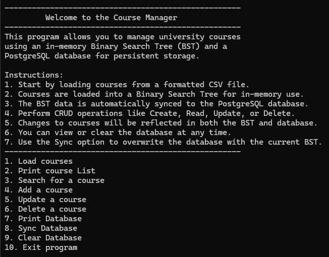
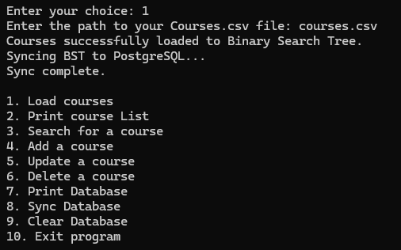

Summary
The third enhancement focused on introducing a database to the selected artifact. For this enhancement, I chose to integrate a relational database into the Course Manager project using PostgreSQL. I selected this
database because it integrated well with Python, and I also wanted to gain experience working with a relational database I hadn't used before.
In my enhancement I created a connection to the Course Manager application that would store
relevant course details related to the Course ID, Course Title, and any existing prerequisites. This enhancement enables users to maintain persistent data across sessions and retrieve course information without reloading.



Enhancement Description
The database implementation connects directly to a PostgreSQL relational database, storing relevant course details for user management. This connection utilizes the psycopg2 python library that integrates with PostgreSQL directly using
database user credentials for access. I wanted the user interaction to be smooth and the process of storing course details in the database to be intuitive and efficient. Upon loading the courses directly from the CSV file, the application
automatically syncs the data to the database. This eliminates the need for users to manually reload courses into PostgreSQL each time the application starts.
I integrated the CRUD operations to be synced
with the database also, ensuring that if a user performs an operation such as updating or deleting it would also remove those course(s) from the database, requiring minimal redundant operations. I also added features such as printing courses
currently stored in the database, as well as inserting individual courses when needed. This meant that a user is able to distinguish between the courses they are currently managing directly in the application versus the ones that are stored in the database.
This feature helps users track their progress in course management and database storage.
A few other features I included was the ability to sync the Course Manager application directly with the database.
This meant that if multiple changes have occurred during user interactions, the database syncs instantly with all current courses in the Binary Search Tree (BST). The introduction of a database like PostgreSQL has made course management even easier for users,
ensuring persistent and secure data storage throughout the application’s use.


Narrative
This final enhancement allowed me to fully expand my Course Manager application by integrating a PostgreSQL database to enable persistent data storage. The previous enhancement incorporated a Binary Search Tree with the loading of courses through a CSV file,
now supports database CRUD operations using the psycopg2 library to sync between the BST and the database.
Adding these features has enabled me to demonstrate my ability to implement and manage a relational database in Python, handling dynamic data structures
and maintaining a consistent state across applications.
Additionally, I included several unique features like full synchronization, reset options, and data formatting logic for prerequisites that piece together to form a clean and scalable design.
Moreover, I encountered several challenges during this implementation, including how to prevent data duplication during sync operations and formatting course relationships to maintain consistent storage. By implementing the sync capability, I was able to solve these
issues and improve my understanding of several key areas like database constraints, string manipulation, and modular design patterns. Overall, this enhancement reflects my growth in understanding database interaction, error handling, and overall software design.
Together, these enhancements demonstrate the skills I've developed across three key areas—software design, data structures and algorithms, and databases, and showcase my ability to grow and adapt in the field of software development.
Course Outcomes
- Employ strategies for building collaborative environments that enable diverse audiences to support organizational decision making in the field of computer science
- Design, develop, and deliver professional-quality oral, written, and visual communications that are coherent, technically sound, and appropriately adapted to specific audiences and contexts
- Design and evaluate computing solutions that solve a given problem using algorithmic principles and computer science practices and standards appropriate to its solution, while managing the trade-offs involved in design choices
- Demonstrate an ability to use well-founded and innovative techniques, skills, and tools in computing practices for the purpose of implementing computer solutions that deliver value and accomplish industry-specific goals
- Develop a security mindset that anticipates adversarial exploits in software architecture and designs to expose potential vulnerabilities, mitigate design flaws, and ensure privacy and enhanced security of data and resources